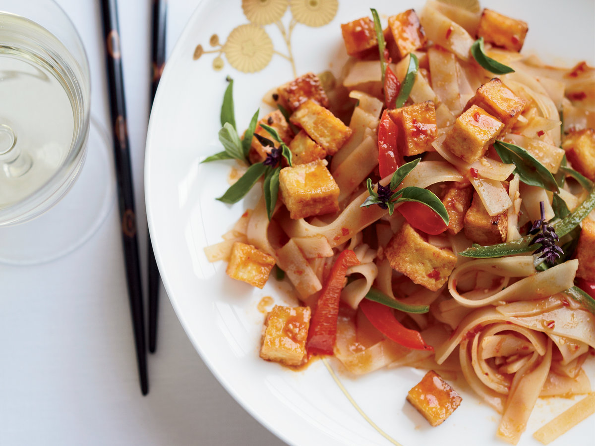

Soak rice noodles in room temperature water 30 minutes prior to cooking.
In a small saucepan over medium-high heat, whisk together palm sugar, tamarind paste, and fish sauce. Bring to a boil, reduce heat, and reduce for 5 minutes until the sauce thickens and coats the back of a wooden spoon. Remove sauce from heat and set aside.
Heat a cast-iron pan or wok over high heat.
Add oil and chicken and cook for about two minutes until nearly cooked through and nicely seared on all sides.
Add minced garlic, shallots, and turnips to the chicken and stir to incorporate.
Move the chicken to the side of the pan and add the egg. Break the egg up with a spatula or wooden spoon and stir to scramble.
Add soaked rice noodles and stir to evenly incorporate all ingredients, stirring for 1 to 2 minutes.
Add 2 or 3 tablespoons of the reduced sauce and stir.
Add tofu, Chinese chives or green onions, and bean sprouts. Stir to incorporate and remove "from" heat.
Serve immediately with lime, peanuts, more sprouts and chives, and red chiles, if desired.
Enjoy!
Drunken Noodles

Ingredients
Vegetable oil
7 ounces firm tofu, cubed and dried
1/2 cup chicken stock
1 tablespoon oyster sauce
1 tablespoon Asian fish sauce
1 1/2 teaspoons roasted red chile paste
1 teaspoon black soy sauce
1/2 teaspoon sugar
1/2 red bell pepper, seeded and sliced
1/2 large jalapeño, seeded and sliced
2 garlic cloves, minced
1 red Thai bird chile, minced
1/2 pound pad thai rice noodles, cooked and cut in half crosswise
Thai basil leaves
Lime wedges, for serving
Preparations
In a nonstick skillet, heat 1/4 inch of oil. Add the tofu and cook over moderately high heat, turning, until crisp, 5 minutes. Drain.
In a bowl, whisk the stock, oyster sauce, fish sauce, chile paste, soy sauce and sugar.
In a large skillet, heat 2 tablespoons of oil. Add the bell pepper, jalapeño, garlic and Thai chile and stir-fry over high heat until fragrant, 2 minutes.
Add the noodles and stir-fry until browned, 4 minutes. Add the sauce and toss over moderately high heat, until absorbed. Fold in 1 cup of basil and the tofu.
Garnish with more basil and serve with lime wedges.
Pad See Ew
Ingredients
4 ounces boneless chicken, thinly sliced
1 teaspoon baking soda
2 tablespoons oyster sauce
4 teaspoons light soy sauce, divided
2 teaspoons sugar
2 teaspoons rice vinegar
1 garlic clove, minced
Vegetable oil
8 ounces flat rice noodles
1 1/2 cups broccoli florets, sliced
2 large eggs
2 tablespoons sweet dark soy sauce
Preparations
In a medium-sized bowl, toss the chicken with 2 teaspoons of soy sauce and the baking soda. Set aside.
In a second medium-sized bowl, whisk together the oyster sauce, 2 teaspoons soy sauce, sugar, rice vinegar, and garlic clove.
Bring a large pot of water to a boil. Add the rice noodles and cook according to the directions on the packaging. When done, remove noodles with a pair of tongs and drain in a colander. Toss with a tablespoon of oil so the noodles don't stick together
Place the pot back over high heat and return to a boil. Place the marinated chicken in a large strainer and dip into the water. Cook until the chicken looks white. When done set the chicken aside in a large bowl.
Pour enough oil into a large work to just coat the bottom and turn heat to high. When just starting to smoke, add the broccoli. Stir-fry until broccoli turns bright green and becomes tender. Transfer broccoli to the large bowl and set aside.
Carefully rinse out the wok and then dry it. Pour in two tablespoons of oil, and turn heat to high. When just starting to smoke, crack in the eggs. Using a wooden spoon, scramble the eggs. When set, add the noodles. Toss well to separate the strands, and then let them cook for a minute.
Drizzle on the sweet soy sauce, toss well, and then let cook undisturbed until the noodles start to brown, about one minute. Add the broccoli and chicken back to the pan. Toss well. When everything is warm, pour in sauce. Stir fry until everything is coated. Turn off the heat and serve immediately.